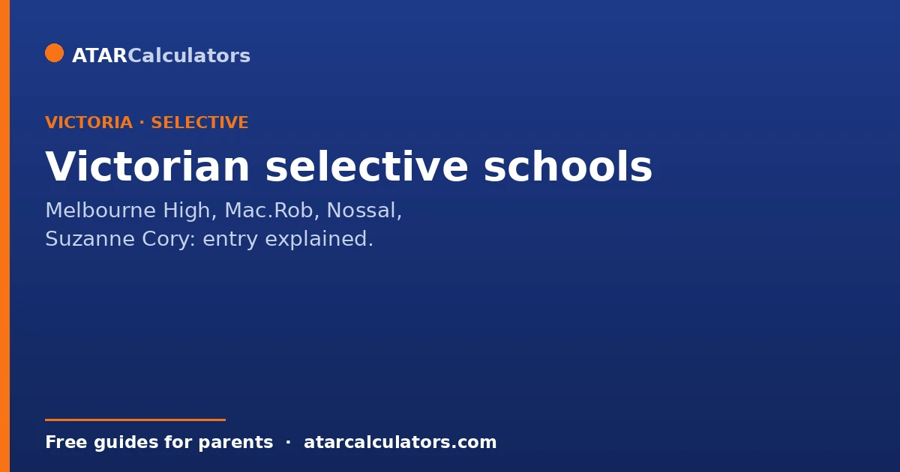
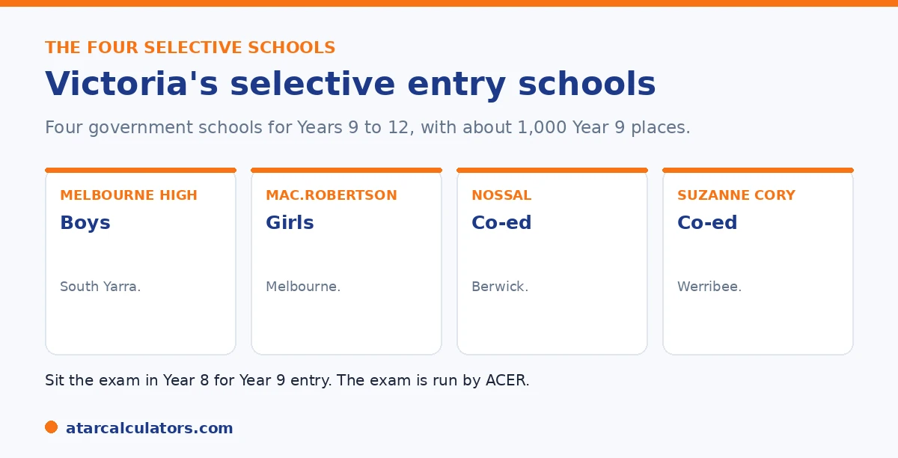

Here is the short version. Victoria has four selective entry high schools: Melbourne High School, The Mac.Robertson Girls' High School, Nossal High School, and Suzanne Cory High School. They are for academically high-achieving students in Years 9 to 12. Students sit a centralised entrance exam, run by ACER, in Year 8 for entry in Year 9. Around 1,000 places are offered each year. Entry is by competitive ranking, and there are no published cut-off scores.
Victoria's selective schools are among the most sought-after in the state, so parents naturally ask what score is needed. The honest answer is that no cut-off is published.
Below is how entry works, which schools there are, and how they compare. To estimate a result, use our Victorian selective calculator.
Key takeaways
- Victoria has four selective entry high schools.
- They are Melbourne High, Mac.Robertson, Nossal, and Suzanne Cory.
- Students sit the exam in Year 8, for entry in Year 9.
- The exam is run by ACER, and around 1,000 places are offered.
- Entry is by competitive ranking, with no published cut-offs.
- Melbourne High and Mac.Rob generally need the highest rankings.
The four selective entry schools
Victoria has four selective entry high schools, all government schools for academically high-achieving students in Years 9 to 12. Here they are.

| School | Type | Location |
|---|---|---|
| Melbourne High School | Boys | South Yarra |
| The Mac.Robertson Girls' High School | Girls | Melbourne |
| Nossal High School | Co-educational | Berwick |
| Suzanne Cory High School | Co-educational | Werribee |
All four are government schools for Years 9 to 12. Entry is at Year 9.
How entry works
Entry is decided by one central exam, run by ACER (the Australian Council for Educational Research). Students sit it in Year 8, for entry into Year 9 the next year. The exam is held on one Saturday, usually in June, at test centres across Victoria.
Around 1,000 places are offered each year across the four schools, roughly 250 per school. Entry is by competitive ranking, so a child is measured against everyone else who sat the exam that year. A small number of places at Years 10 and 11 are managed directly by the schools, outside this central process.
The truth about cut-off scores
As in New South Wales, there are no published cut-off scores. Entry is a ranking, not a fixed pass mark, and the line shifts each year with the cohort and the difficulty of the paper.
So any exact score you see online is an estimate. The sensible aim is a strong, balanced result across all sections rather than a magic number. Students rank all four schools in order of preference, and are placed at the highest-ranked school where their result is competitive.
Want a rough idea of where a practice result sits?
Try the Victorian selective calculator →How the schools compare in demand
While there are no published cut-offs, the relative demand is known. Melbourne High and Mac.Robertson generally need the highest rankings, as the most sought-after schools. Nossal and Suzanne Cory may accept students from slightly lower percentiles.
The gaps can be small, and they shift year to year. A child aiming for any of the four needs a strong overall result, with balanced performance mattering more than excelling in one area alone.
It helps to hold the demand picture loosely, because it guides preferences without being a fixed hierarchy. Melbourne High (for boys) and Mac.Robertson (for girls) are generally the most sought-after, and tend to need the highest rankings. Nossal and Suzanne Cory, both co-educational, may accept students from a somewhat wider band. That partly reflects location and applicant patterns. But these differences are relative and modest, not fixed cut-offs. The exact score needed at any school shifts each year with the strength and size of the applicant pool. The equity placement model also means offers do not fall in a perfectly straight rank order.
That has a practical consequence for how you preference the schools. One exam result feeds all four, and you are placed at the highest-preference school where your result is competitive. So the right strategy is to list the schools in your genuine order of preference, including the most competitive. There is no penalty for aiming high. If you miss, you are simply considered for your next choice with the same result. Balanced performance across the exam's sections matters more than a spike in one, because a weakness in any area drags the overall result down. So prepare for an even, strong profile. Preference all the schools you would genuinely attend in true order. And treat the demand rankings as a rough guide to competitiveness, rather than a set of guaranteed thresholds. That approach makes the fullest use of a single result across all four schools.
What the exam covers
The ACER exam tests ability and reasoning, not memorised facts. It covers reading and verbal reasoning, maths and numerical reasoning, and writing, with one persuasive and one creative task. The content does not go beyond Year 8 level.
For a full breakdown of the exam and the process, see our Victorian selective entry test guide.
A note on John Monash Science School
One school often mentioned alongside these is John Monash Science School, a specialist science school. It is not one of the four selective entry high schools. It has its own, separate entry process, with entry at Year 10 rather than Year 9.
If your child is interested in science and technology, it is worth a look. See our John Monash Science School guide for the details.
Entry is at Year 9
Victorian selective entry happens at Year 9, later than in New South Wales, where the main selective intake is at Year 7. Students sit the entrance exam in Year 8, for a Year 9 start.
So the timing is different from other states. If you are planning for a Victorian selective school, the key year to prepare is Year 8, ahead of the exam.
How to apply
Families register their child, who then sits the entrance exam. You list preferences among the four fully selective schools, and offers are made based on exam performance and those preferences.
So the process is register, sit the exam, and choose preferences. Registering within the set window is essential, as late entries are generally not accepted.
Single-sex and co-ed schools
The four schools differ in who they enrol. Melbourne High School is for boys, and Mac.Robertson Girls' High School for girls. Nossal High School and Suzanne Cory High School are co-educational.
So your child's eligible options depend on their cohort, and on which environment suits them. This shapes how you order your preferences among the four.
Location and travel
The four schools sit in different parts of the Melbourne area. So travel is a genuine factor, since your child may commute daily for four years of senior school.
A school that suits your child and is realistically reachable can be a better choice than a more famous one with a long commute. Weigh location alongside reputation and fit.
Four years at the school
Because entry is at Year 9, an offer means four years of senior schooling at that school. That is a significant commitment for your child and family, so fit and location deserve real thought.
So look beyond the entrance exam to the years that follow. A school your child will be happy at, and can reach without an exhausting commute, matters over four important years.
Demand differs between the four
The four fully selective schools vary in how contested they are, and that demand shifts over time. As in other states, no cut-off scores are published for any of them.
So you cannot plan against a fixed number. The honest picture is strong competition that differs by school and year, which is why fit and sensible preferences matter more than chasing a figure.
Ordering your preferences
You list the four fully selective schools in order of preference, so the order deserves thought. Weigh each school's environment, its location and commute, and how contested it tends to be.
So a sensible order balances ambition with realism and fit. Placing a strong, reachable school your child would be happy at high on the list can secure a good offer, rather than listing only by reputation.
Who runs the entrance exam
The entrance exam is run by a testing provider on behalf of the Victorian Department of Education. Families register through the official process, and the exam is common across the four fully selective schools.
So there is one exam that feeds all four schools, not a separate test for each. Registering through the correct, official channel, within the set window, is essential, since late or incorrect applications are generally not accepted.
Common questions
What score do you need for Melbourne High?
No official cut-off is published, so there is no exact score to quote. Melbourne High is one of the most competitive Victorian selective schools. So a child needs a high ranking, with strong, balanced results across all sections.
What are the Victorian selective entry requirements?
Students sit a centralised ACER exam in Year 8 for entry in Year 9. Eligibility covers students at government, non-government, and home schools, with citizenship or visa criteria. Entry is by competitive ranking, with no published cut-offs.
How competitive is Mac.Robertson Girls' High School?
Very. Mac.Robertson generally needs one of the highest rankings among the four schools, alongside Melbourne High. A strong, balanced result across all sections is needed, and the exact line changes each year.
When do students sit the Victorian selective exam?
Students sit it in Year 8, usually on a single Saturday in June, for entry into Year 9 the following year. Applications typically open in March and close in April. Confirm exact dates with the Department.
How many selective places are there in Victoria?
Around 1,000 places are offered each year for Year 9 entry across the four schools, roughly 250 per school. There are far more applicants than places, so entry is competitive.
Is John Monash Science School a selective entry high school?
Not one of the four. It is a specialist science school with its own separate entry process, and entry at Year 10. That is different from the Year 9 central process used by the four selective entry high schools.
Estimate a Victorian selective result
Enter practice section results for a rough competitiveness guide. Free, and no signup.
Open the Victorian selective calculator →Related guides
This guide is general information for parents, not formal advice. The Victorian Department of Education and ACER set the rules, and details like dates and the selection categories can change. There are no published cut-off scores, so always confirm current details on the official Victorian selective entry pages. Reviewed by the ATARCalculators Editorial Team.